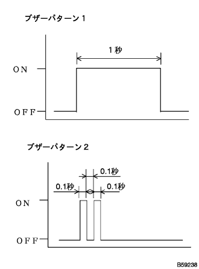
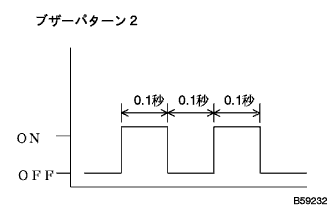

パワースライドドア ダイアグノーシスシステム |
| 手順1 | 車両初期設定 |
スライドドアの作動条件にする。(イグニツシヨンスイツチ OFF時)
バツテリ電圧11V以上
オートスライドドアメインスイッチON(突出している)
フユーエルリツド閉(フユーエルリツド開検出スイツチON時)
スライドドアがUNLOCK(ポジションスイッチON時)
シフトP位置
スライドドアを全閉状態にする。
| 手順2 | 自己診断モード1 |
|  |
自己診断モード1への移行方法
オートスライドドアメインスイッチをOFFにする。
イグニツシヨンスイツチOFFからONにした後、10秒以内にドアコントロールスイツチ(フロント席操作SW)OFF←→ONを10回繰り返す。
上記作業終了後、1回(ブザーパターン1)ブザーが吹鳴する。
ブザー吹鳴後3秒以内に、オートスライドドアメインスイッチをONにするとブザーパターン2が吹鳴し、自己診断モード1へと移行する。
自己診断モード1(確認モード)点検
スライドドア全閉位置からドアコントロールスイッチによりスライドドアを全開させる。
インサイドハンドルによりスライドドアを全閉させる。
自己診断モード1(入力確認モード)点検
上記作業終了後、下記の各操作をし、入力信号を検知するとブザーが0.5秒吹鳴する。
| 操作部位(スイッチ) | 点検条件 | 異常時飛び先 |
|---|---|---|
| シフトレバー(ニュートラルスタートスイッチASSY) | Pレンジ←→他のレンジ | A |
| パーキングブレーキ(パーキングブレーキスイッチ) | ON←→OFF | B |
| 車速(スピードセンサ) | 車速3km/h未満←→車速3km/h以上 | C |
| ドアロック(ドアロックポジションスイッチ) | ON←→OFF | D |
| フューエルリッド | 閉→開 | E、 |
| パワースライドドアセンサーASSY(タッチセンサ) | ON←→OFF | F、H |
| 異常なし | - | H、終了する場合はG |
|
| ||||
|
| ||||
|
| ||||
|
| ||||
|
| ||||
|
| ||||
|
| ||||
| |||||
| 手順3 | 自己診断モード2 |
|  |
自己診断モード1から自己診断モード2への移行方法
自己診断モードに移行後、ドアコントロールスイツチ(フロント席操作SW)ONからOFFを0.5秒以内に操作し、2回ブザーが吹鳴(ブザーパターン2)すると自己診断モード2へと移行する。
自己診断モード2点検
自己診断モード1(確認モード)で検知した故障コードをブザーにより出力する。
| 故障部位 | 故障コード | 飛び先 |
| スライドドアロツクASSY [ラッチスイッチ(フルラッチポジション)] | 1-3 | A |
| スライドドアロツクASSY [ラッチスイッチ(ハーフラッチポジション)] | 2-1 | B |
| スライドドアロツクASSY(ポールスイツチ) | 2-2 | C |
| スライドドアロツクASSY(元位置スイツチ) | 2-3 | D |
| パワースライドドアセンサASSY (タツチセンサ)断線 | 1-2 | E |
| 異常検知なし | 正常コード出力 | G 終了する場合はF |
|
| ||||
|
| ||||
|
| ||||
|
| ||||
|
| ||||
|
| ||||
| |||||
| 手順4 | 自己診断モード3 |
自己診断モード2から自己診断モード3への移行方法
自己診断モード2に移行後、ドアコントロールスイツチ(フロント席操作SW)ONからOFFを0.5秒以内に操作し、2回ブザーが吹鳴(ブザーパターン2)すると自己診断モード3へと移行する。
自己診断モード3点検
自己診断モード3に移行すると、スライドドア使用過程において記憶したスイッチ異常をブザー吹鳴により出力する。
自己診断モード3から通常モードへの移行方法
イグニツシヨンスイツチONからOFFにする。
オートスライドドアメインスイツチをOFFにする。
ドアコントロールスイツチ(フロント席操作SW)ONからOFFを0.5秒以内に操作する。
|
|
| 手順5 | 自己診断モード1から通常モードへの移行方法 |
自己診断モード1から通常モードへの移行方法(1つでも成立時)
イグニツシヨンスイツチONからOFFにする。
オートスライドドアメインスイツチをOFFにする。
|
|
| 手順6 | 自己診断モード2から通常モードへの移行方法 |
自己診断モード2から通常モードへの移行方法(1つでも成立時)
イグニツシヨンスイツチONからOFFにする。
オートスライドドアメインスイツチをOFFにする。
|
| ||||
|---|---|---|---|---|---|